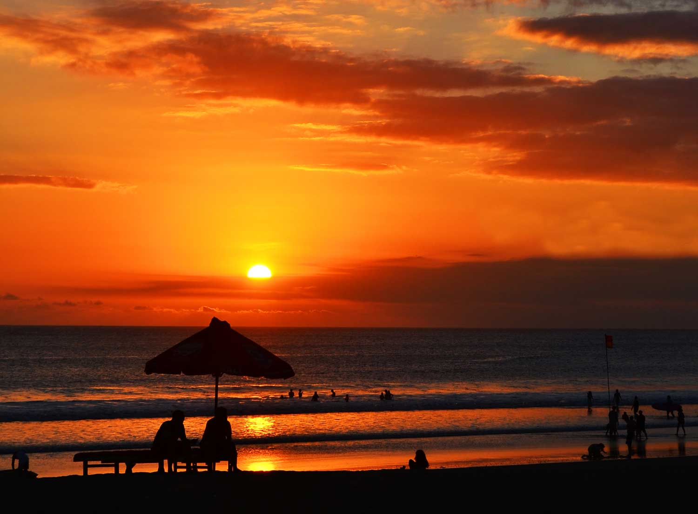

Pantai Jimbaran
Post by Ngurah, Sunday 06 Juny 2018
Pantai Jimbaran adalah sebuah teluk yang sangatpopuler di Bali. Bali jimbaran bay juga dikenal sebagai pasar ikan, karena ditempat ini juga terdapat sebuah dermaga yang berfungsi untuk menyandarkan kapalbagi nelayan yang selesai melaut. Di
Bali jimbaran bay, ikan selalu segarkarena masih dalam keadaan hidup. Karena jumlah nelayan dan pedagang ikan yangbanyak, Jimbaran juga disebut pasar ikan utama di Kabupaten Badung.

Seperti pantai Kuta dan Nusa Dua di pulau Bali, pantai Jimbaranjuga
daratan yang tertutup oleh pasir putih. Pemandangan sunsetmembuat pantai ini memiliki kesan yang romantis. Daya tarik lainnya yangdimiliki Pantai Jimbaran yaitu kulinernya yang berupa makanan laut. Anda bisamenikmati makan
malam yang romantis dengan menu jimbaran seafoodkhas daerah ini di kafe yang berjajar di sepanjang pantai. Jimbaran bayterletak tidak jauh dari Bandara Ngurah Rai, yang memerlukan waktu sekitar 10menit dan Anda akan sampai
pantai Bali ini. Karena lokasinya yang dekatbandara, Anda dapat melihat pesawat lepas landas atau mendarat dari pantai.Sebagai salah satu tujuan pantai Bali, Jimbaran juga digunakan sebagai tempatberjemur.
Pantai Jimbaran adalah salah satu tempat wisatafavorit di Bali. Pasir putih yang membentang di sepanjang garis pantai danombak yang tenang memberikan suasana elegan di Jimbaran bay.Dari kejauhan kita juga bisa melihat perahu
nelayan tradisional yang sedangmelaut untuk menangkap ikan. Pemandangan seperti ini tidak akan Anda lihat dipantai Bali lainnya..
Pada sore hari, Anda akan merasakan kehidupanmalam romantis di pantai ini. Begitu kafe-kafe mulai buka dan mulai menawarkankuliner khas jimbaran dengan menu Seafoodnya. Ketika Anda mengunjungipantai Jimbaran ini, Anda dapat berjalan-jalan
di sepanjang pantai sehariandan kemudian ditutup dengan makan malam romantis dengan harga terjangkau.Selain makanan laut, pantai Jimbaran Bali menawarkan pantai yang indah, pasirputih bersih dan pesona matahari terbenamnya. Jangan khawatir
tentangakomodasi, ada banyak hotel berbintang dekat dengan pantai.
Sumber : http://id.balibalibeach.com/pantai/pantai-jimbaran-bali/